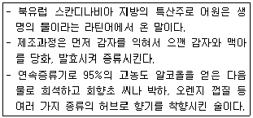
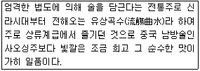
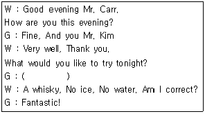
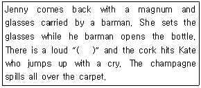
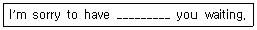
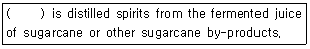
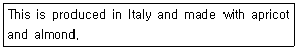
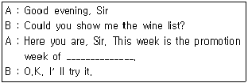

조주기능사 (2016-04-02 기출문제)
1과목: 주류학개론
1. 혼성주에 해당하는 것은?
- Armagnac
- Corn Whisky
- Cointreau
- Jamaican Rum
(정답률: 70%)

2. 각 국가별 부르는 적포도주로 틀린 것은?
- 프랑스 – Vin Rouge
- 이태리 – Vino Rosso
- 스페인 – Vino Rosado
- 독일 – Rotwein
(정답률: 49%)
3. Sparkling Wine이 아닌 것은?
- Asti Spumante
- Sekt
- Vin mousseux
- Troken
(정답률: 59%)
4. 포도 품종의 그린 수확(Green Harvest)에 대한 설명으로 옳은 것은?
- 수확량을 제한하기 위한 수확
- 청포도 품종 수확
- 완숙한 최고의 포도 수확
- 포도원의 잡초제거
(정답률: 70%)
5. 보르도 지역의 와인이 아닌 것은?
- 샤블리
- 메독
- 마고
- 그라브
(정답률: 44%)
6. 프랑스에서 생산되는 칼바도스(Calvados)는 어느 종류에 속하는가?
- Brandy
- Gin
- Wine
- Whisky
(정답률: 79%)
7. 원료인 포도주에 브랜디나 당분을 섞고 향료나 약초를 넣어 향미를 내어 만들며 이탈리아산이 유명한 것은?
- Manzanilla
- Vermouth
- Stout
- Hock
(정답률: 77%)
8. 다음 중 Aperitif Wine으로 가장 적합한 것은?
- Dry Sherry Wine
- White Wine
- Red Wine
- Port Wine
(정답률: 79%)
9. 혼성주의 종류에 대한 설명이 틀린 것은?
- 아드보카트(Advocaat)는 브랜디에 계란노른자와 설탕을 혼합하여 만들었다.
- 드람브이(Drambuie)는 “사람을 만족시키는 음료”라는 뜻을 가지고 있다.
- 아르마냑(Armagnac)은 체리향을 혼합하여 만든 술이다.
- 깔루아(Kahlua)는 증류주에 커피를 혼합하여 만든 술이다.
(정답률: 68%)
10. 혼성주 제조방법인 침출법에 대한 설명으로 틀린 것은?
- 맛과 향이 알코올에 쉽게 용해되는 원료일 때 사용한다.
- 과실 및 향료를 기주에 담가 맛과 향이 우러나게 하는 방법이다.
- 원료를 넣고 밀봉한 후 수개월에서 수년간 장기 숙성시킨다.
- 맛과 향이 추출되면 여과한 후 블렌딩하여 병입한다.
(정답률: 45%)
11. 보졸레 누보 양조과정의 특징이 아닌 것은?
- 기계수확을 한다.
- 열매를 분리하지 않고 송이채 밀폐된 탱크에 집어넣는다.
- 발효 중 CO2의 영향을 받아 산도가 낮은 와인이 만들어진다.
- 오랜 숙성 기간 없이 출하한다.
(정답률: 56%)
12. 맥주의 원료로 알맞지 않은 것은?
- 물
- 피트
- 보리
- 호프
(정답률: 89%)
13. 원산지가 프랑스인 술은?
- Absinthe
- Curacao
- Kahlua
- Drambuie
(정답률: 47%)
14. 상면발효 맥주로 옳은 것은?
- Bock Beer
- Budweiser Beer
- Porter Beer
- Asahi Beer
(정답률: 73%)
15. Hop에 대한 설명 중 틀린 것은?
- 자웅이주의 숙근 식물로서 수정이 안 된 암꽃을 사용한다.
- 맥주의 쓴 맛과 향을 부여한다.
- 거품의 지속성과 항균성을 부여한다.
- 맥아즙 속의 당분을 분해하여 알코올과 탄산가스를 만드는 작용을 한다.
(정답률: 57%)
16. 다음에서 설명하는 것은?

- Vodka
- Rum
- Aquavit
- Brandy
(정답률: 71%)
17. 프랑스에서 사과를 원료로 만든 증류주인 Apple Brandy는?
- Cognac
- Calvados
- Armagnac
- Camus
(정답률: 78%)
18. 다음 중 과실음료가 아닌 것은?
- 토마토주스
- 천연과즙주스
- 희석과즙음료
- 과립과즙음료
(정답률: 72%)
19. 우리나라 전통주 중에서 약주가 아닌 것은?
- 두견주
- 한산 소국주
- 칠선주
- 문배주
(정답률: 47%)
20. 다음 중 스카치 위스키(Scotch Whisky)가 아닌 것은?
- Crown Royal
- White Horse
- Johnnie Walker
- Chivas Regal
(정답률: 57%)
21. 차를 만드는 방법에 따른 분류와 대표적인 차의 연결이 틀린 것은?
- 불발효차 – 보성녹차
- 반발효차 – 오룡차
- 발효차 – 다즐링차
- 후발효차 – 쟈스민차
(정답률: 64%)
22. 소다수에 대한 설명으로 틀린 것은?
- 인공적으로 이산화탄소를 첨가한다.
- 약간의 신맛과 단맛이 나며 청량감이 있다.
- 식욕을 돋우는 효과가 있다.
- 성분은 수분과 이산화탄소로 칼로리는 없다.
(정답률: 68%)
23. 다음에서 설명되는 우리나라 고유의 술은?

- 두견주
- 인삼주
- 감홍로주
- 경주교동법주
(정답률: 81%)
24. 레몬쥬스, 슈가시럽, 소다수를 혼합한 것으로 대용할 수 있는 것은?
- 진저엘
- 토닉워터
- 칼린스 믹스
- 사이다
(정답률: 68%)
25. 다음 중 테킬라(Tequila)가 아닌 것은?
- Cuervo
- El Toro
- Sambuca
- Sauza
(정답률: 54%)
26. 다음 중 아메리칸 위스키(American Whisky)가 아닌 것은?
- Jim Beam
- Wild Whisky
- John Jameson
- Jack Daniel
(정답률: 67%)
27. 다음 중 그 종류가 다른 하나는?
- Vienna Coffee
- Cappuccino Coffee
- Espresso Coffee
- Irish Coffee
(정답률: 77%)
28. 스카치 위스키의 5가지 법적 분류에 해당하지 않는 것은?
- 싱글 몰트 스카치 위스키
- 블렌디드 스카치 위스키
- 블렌디드 그레인 스카치 위스키
- 라이 위스키
(정답률: 74%)
29. 다음 중 증류주에 속하는 것은?
- Vermouth
- Champagne
- Sherry Wine
- Light Rum
(정답률: 80%)
30. 음료의 역사에 대한 설명으로 틀린 것은?
- 기원전 6000년 경 바빌로니아 사람들은 레몬과즙을 마셨다.
- 스페인 발렌시아 부근의 동굴에서는 탄산가스를 발견해 마시는 벽화가 있었다.
- 바빌로니아 사람들은 밀빵이 물에 젖어 발효된 맥주를 발견해 음료로 즐겼다.
- 중앙아시아 지역에서는 야생의 포도가 쌓여 자연 발효된 포도주를 음료로 즐겼다.
(정답률: 64%)
2과목: 주장관리개론
31. 주장(Bar)에서 주문받는 방법으로 가장 거리가 먼 것은?
- 손님의 연령이나 성별을 고려한 음료를 추천하는 것은 좋은 방법이다.
- 추가 주문은 고객이 한잔을 다 마시고 나면 최대한 빠른 시간에 여쭤 본다.
- 위스키와 같은 알코올 도수가 높은 술을 주문받을 때에는 안주류도 함께 여쭤본다.
- 2명 이상의 외국인 고객의 경우 반드시 영수증을 하나로 할지, 개인별로 따로 할지 여쭤본다.
(정답률: 84%)
32. 샴페인 1병을 주문한 고객에게 샴페인을 따라주는 방법으로 옳지 않은 것은?
- 샴페인은 글라스에 서브할 때 2번에 나눠서 따른다.
- 샴페인의 기포를 눈으로 충분히 즐길 수 있게 따른다.
- 샴페인은 글라스의 최대 절반정도까지만 따른다.
- 샴페인을 따를 때에는 최대한 거품이 나지 않게 조심해서 따른다.
(정답률: 54%)
33. 에스프레소 추출 시 너무 진한 크레마(Dark Crema)가 추출되었을 때 그 원인이 아닌 것은?
- 물의 온도가 95℃보다 높은 경우
- 펌프압력이 기준 압력보다 낮은 경우
- 포터필터의 구멍이 너무 큰 경우
- 물 공급이 제대로 안 되는 경우
(정답률: 62%)
34. 칵테일을 만드는 데 필요한 기물이 아닌 것은?
- Cork Screw
- Mixing Glass
- Shaker
- Bar Spoon
(정답률: 88%)
35. 다음 중 주장 종사원(Waiter/Waitness)의 주요 임무는?
- 고객이 사용한 기물과 빈 잔을 세척한다.
- 칵테일의 부재료를 준비한다.
- 창고에서 주장(Bar)에서 필요한 물품을 보급한다.
- 고객에게 주문을 받고 주문받은 음료를 제공한다.
(정답률: 81%)
36. 바람직한 바텐더(Bartender) 직무가 아닌 것은?
- 바(Bar) 내에 필요한 물품 재고를 항상 파악한다.
- 일일 판매할 주류가 적당한지 확인한다.
- 바(Bar)의 환경 및 기물 등의 청결을 유지, 관리한다.
- 칵테일 조주 시 지거(Jigger)를 사용하지 않는다.
(정답률: 94%)
37. Glass 관리방법 중 틀린 것은?
- 알맞은 Rack에 담아서 세척기를 이용하여 세척한다.
- 닦기 전에 금이 가거나 깨진 것이 없는 지 먼저 확인한다.
- Glass의 Steam부분을 시작으로 돌려서 닦는다.
- 물에 레몬이나 에스프레소 1잔을 넣으면 Glass의 잡냄새가 제거된다.
(정답률: 60%)
38. Extra Dry Martini는 Dry Vermouth를 어느 정도 넣어야 하는가?
- 1/4 oz
- 1/3 oz
- 1 oz
- 2 oz
(정답률: 52%)
39. Gibson에 대한 설명으로 틀린 것은?
- 알코올 도수는 약 36도에 해당된다.
- 베이스는 Gin이다.
- 칵테일 어니언(Onion)으로 장식한다.
- 기법은 Shaking이다.
(정답률: 56%)
40. 칵테일 상품의 특성과 가장 거리가 먼 것은?
- 대량 생산이 가능하다.
- 인적 의존도가 높다.
- 유통 과정이 없다.
- 반품과 재고가 없다.
(정답률: 82%)
41. 바의 한 달 전체 매출액이 1000만원이고 종사원에게 지불된 모든 급료가 300만원이라면 이 바의 인건비율은?
- 10%
- 20%
- 30%
- 40%
(정답률: 90%)
42. 내열성이 강한 유리잔에 제공되는 칵테일은?
- Grasshopper
- Tequila Sunrise
- New York
- Irish Coffee
(정답률: 80%)
43. 다음 중에서 Cherry로 장식하지 않는 칵테일은?
- Angel's Kiss
- Manhattan
- Rob Roy
- Martini
(정답률: 70%)
44. 칵테일에 사용되는 Garnish에 대한 설명으로 가장 적절한 것은?
- 과일만 사용이 가능하다.
- 꽃이 화려하고 향기가 많이 나는 것이 좋다.
- 꽃가루가 많은 꽃은 더욱 운치가 있어서 잘 어울린다.
- 과일이나 허브향이 나는 잎이나 줄기가 적합하다.
(정답률: 82%)
45. 다음 중 가장 영양분이 많은 칵테일은?
- Brandy Eggnog
- Gibson
- Bacardi
- Olympic
(정답률: 86%)
46. 다음 중 1 oz 당 칼로리가 가장 높은 것은? (단, 각 주류의 도수는 일반적인 경우를 따른다.)
- Red Wine
- Champagne
- Liqueur
- White Wine
(정답률: 75%)
47. 네그로니(Negroni) 칵테일의 조주 시 재료로 가장 적합한 것은?
- Rum 3/4oz, Sweet Vermouth 3/4oz, Campari 3/4oz, Twist of Lemon Peel
- Dry Gin 3/4oz, Sweet Vermouth 3/4oz, Campari 3/4oz, Twist of Lemon Peel
- Dry Gin 3/4oz, Dry Vermouth 3/4oz , Campari 3/4oz, Twist of Lemon Peel
- Tequila 3/4oz, Sweet Vermouth 3/4oz, Campari 3/4oz, Twist of Lemon Peel
(정답률: 67%)
48. 다음 중 장식이 필요 없는 칵테일은?
- 김렛 (Gimlet)
- 시브리즈 (Seabreeze)
- 올드 패션 (Old Fashioned)
- 싱가폴 슬링 (Singapore Sling)
(정답률: 55%)
49. 칵테일 레시피(Recipe)를 보고 알 수 없는 것은?
- 칵테일의 색깔
- 칵테일의 판매량
- 칵테일의 분량
- 칵테일의 성분
(정답률: 91%)
50. Gibson을 조주할 때 Garnish는 무엇으로 하는가?
- Olive
- Cherry
- Onion
- Lime
(정답률: 71%)
3과목: 고객서비스영어
51. “우리 호텔을 떠나십니까?”의 표현으로 옳은 것은?
- Do you start our hotel?
- Are you leave to our hotel?
- Are you leaving our hotel?
- Do you go our hotel?
(정답률: 68%)
52. 다음 ( )안에 가장 적합한 것은?

- Just one For my health, please.
- One for the road.
- I'll stick to my usual.
- Another one please.
(정답률: 69%)
53. 다음 ( )안에 알맞은 단어와 아래의 상황 후 Jenny가 Kate에게 할 말의 연결로 가장 적합한 것은?

- Peep – Good luck to you.
- Ouch – I am sorry to hear that.
- Tut – How awful!
- Pop – I am very sorry. I do hope you are not hurt.
(정답률: 71%)
54. 다음 밑줄에 들어갈 가장 적합한 것은?

- Kept
- Made
- Put
- Had
(정답률: 65%)
55. Which one is not aperitif cocktail?
- Dry Martini
- Kir
- Campari Orange
- Grasshopper
(정답률: 43%)
56. 다음 ( )안에 알맞은 것은?

- Whisky
- Vodka
- Gin
- Rum
(정답률: 67%)
57. There are basic direction of wine service. Select the one which is not belong to them in the following?
- Filling four-fifth of red wine into the glass.
- Serving the red wine with room temperature.
- Serving the white wine with condition of 8~12℃.
- Showing the guest the label of wine before service.
(정답률: 48%)
58. Which one is not distilled beverage in the following?
- Gin
- Calvados
- Tequila
- Cointreau
(정답률: 53%)
59. 다음 문장에서 의미하는 것은?

- Amaretto
- Absinthe
- Anisette
- Angelica
(정답률: 74%)
60. 다음 밑줄 친 곳에 가장 적합한 것은?

- Stout
- Calvados
- Glenfiddich
- Beaujolais Nouveau
(정답률: 66%)